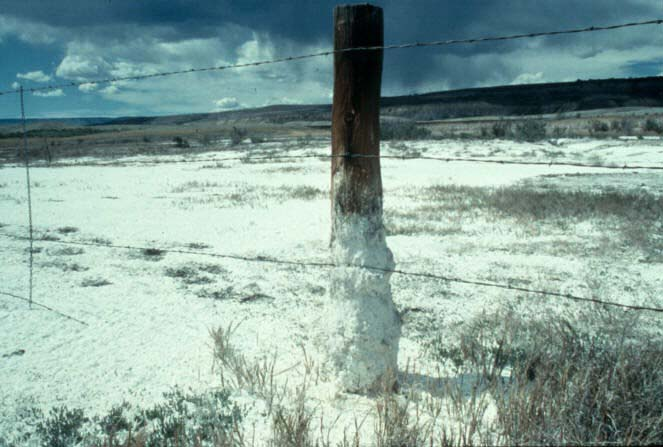

layout: false
class: center, middle, inverse

# Topic 5: Soil Sustainability

---
name: base
layout: true
background-image: url(http://drpineda.ca/classroom/notes/slidebackground.png)

---
# Soil
- Soil, aka the dirt, is the medium in which plants grow.
- There are different soils in the world, depending on many factors 
- Soil is made of many different substances including:
  - Parent materials: non-organic materials like sediments, minerals, clay. Non-organic: 
  - Organic materials: decaying plant parts (leaves, flowers, fruit, bark, etc.). 
  


---
# Organic vs. inorganic materials

**Inorganic materials**: (aka non-organics materials) materials that do not contain carbon 

**Organic materials**: materials that contain carbon. Usually indicate that it is from a biotic factor (living thing). All living things have lots of carbon it them. 
  
---
# Other factors that affect soil production
- The type and amount of vegetation in the area
- The amount of moisture in the soil
- Minerals like vermiculite (a silicon material that helps retain water and create air pockets – looks like styrofoam) or perlite (comes from volcanic glass and helps hold water and loosen soil so plants can grow).
- Amount of oxygen, nitrogen, and other gases
- The types and amount of biotic organisms in the soil (worms, insects, fungi, bacteria)


---
Together, these factors will help break down both organic and non-organic matter down in to smaller pieces to enrich the soil. This nutrient-rich soil is called humus and is in the top layer of the soil.  It is often called the topsoil. The humus helps retain water and nutrients and further enriches the soil.


---
# Soil profile
A soil profile is the cross-section of entire layers of soil that indicate what it is made of, like layers in a cake. These layers are called horizons or strata.


---
# Biotic factors in the soil
- Bacteria: the most diverse and numerous. Bacteria decompose organic matter into nutrients for plants and other organisms. One of the most important soil bacteria is actinomycetes.
- Fungi: include mushrooms, moulds, and yeast. They also decompose organic matter. Often found on rotting logs.
- Earthworms: often called the “digestion system of the Earth” because they digest organic matter and their feces are rich in nutrients. Their worm holes also help mix gases in to the soil (this is called aeration)as well as provide ways for water to flow around in the soil


---
# Fertilizers
- Fertilizers are organic chemicals that help add extra nutrients into the soil for plant growth. The most natural is manure but synthetic fertilizers now form the majority of fertilizers.  
- Different types of plants require different amount and types of nutrients, e.g. lettuce needs more `\( \mbox{N}_2 \)` than potatoes  
- All fertilizers have three numbers on the container, e.g. 23 - 40 - 10, indicating the percent of nitrogen (N), phosphorous (P), and potassium(K).
- The rest of the container of filler stuff like vermiculite, perlite, minerals, water,


  
---
# Soil problems: Salination  
- ...from “saline” meaning salty 
- When too much water is used for irrigation and the water evaporates, leaving behind a lot of minerals, including salts, that makes the soil too acidic for plants.
- Also contributing to it is too little vegetation to absorb the salts and minerals fast enough, which leads to a repeating cycle of increase salinization
-Can be resolved by planting lots of vegetation and controlling the amount of irrigation and water run-off 



---
# Soil problems: Erosion

- The carrying away of soil or sediments causing the soil to be less rich in nutrients and plants will not grow very well.
- As a result of:
  - salinization (the process of increasing the soils salinity)
   -over-irrigation that leads to salinization
   - too much wind that carry away topsoil
   - not enough water to keep the soil moist
   - long periods of hot temperatures
   - poor soil conditions 
   - too much ploughing 
   -summer fallow (not growing anything for the summer to stop weed growth but makes soil dry and blows away)  

---
# Saving the soil
- **Growing vegetation** will slow water movement and allow water to be absorbed by the plants and soil instead of eroding the soil
- **Zero tillage**: plant seeds using a special drill that pushes the seeds through the stubble of last year’s crops without disturbing the soil
- **Special cultivator machine** that cuts weeds below the ground surface and not disturb the soil too much 
- **Shelterbelts**: growing a line of trees at the edge of a field to act as a windbreaker and prevent wind from blowing over the field to dry the soil and erode it away.
- **Shaped waterways/canals** that channel excess water away from the field to prevent erosion
- **Crop rotation**: rotating different crops each year to allow the soil to recover nutrients and slow weed growth
- **Leave stumps and logs* where they are to keep the soil in place and to decay and add more nutrients while they decompose. 

---
# Shelterbelts


---
# New ways of growing
## Hydroponics
- Using no soil to grow
- “hydro” = water
- Fertilizers are added carefully and climate is controlled indoors in greenhouses to grow plants year-round.  
- This is most likely how they will grow plants in future space missions.

## Aquaponics 
- Growing plants using no soil but in a pool or tank along with aquatic organisms like fish and snails to provide the nitrogen and carbon dioxide in their wastes.   

---


---
# Aquaponics at Jasper Place High School

<iframe src="//player.vimeo.com/video/54098010" width="500" height="375" frameborder="0" webkitallowfullscreen mozallowfullscreen allowfullscreen></iframe>